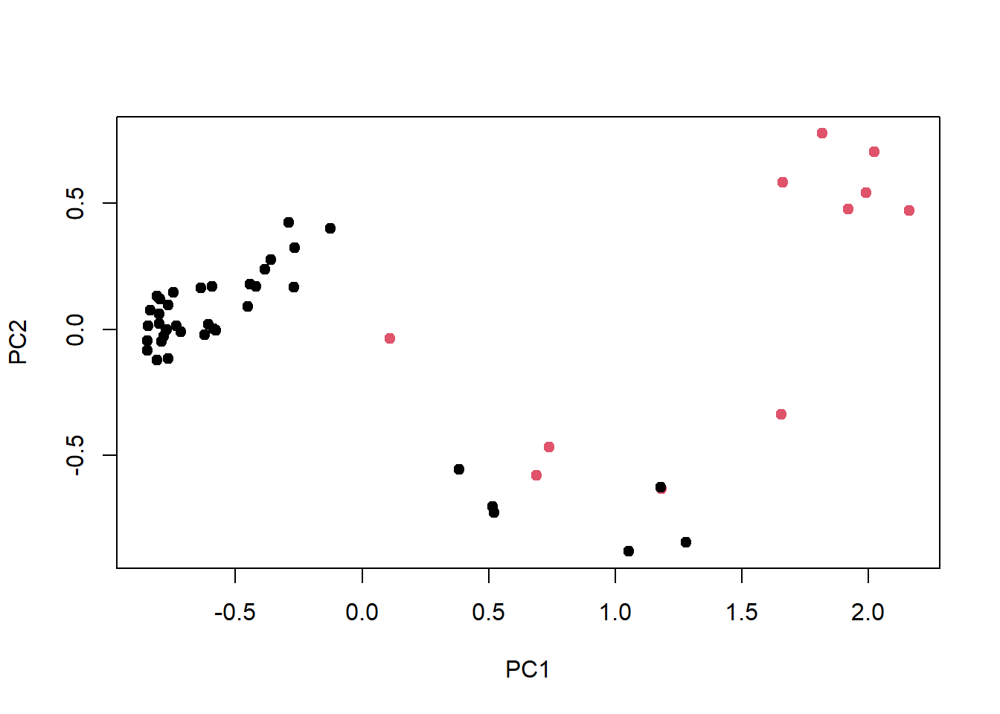

4 Preprocesado de datos.
Para poder tranformar las variables en factor, lo haremos mediante as.factor() a todas las variables de los datos.
Ahora podemos ver mejor como son nuestros datos.
summary(datos.setas)## Letalidad Forma_S Cuticula Color_S Escamas Olor Fijacion_L
## e:4208 b: 452 f:2320 n :2284 f:4748 n :3528 a: 210
## p:3916 c: 4 g: 4 g :1840 t:3376 f :2160 f:7914
## f:3152 s:2556 e :1500 s : 576
## k: 828 y:3244 y :1072 y : 576
## s: 32 w :1040 a : 400
## x:3656 b : 168 l : 400
## (Other): 220 (Other): 484
## Espacio_L Tamaño_L Color_L Forma_T Tallo_raiz Superficie_T1
## c:6812 b:5612 b :1728 e:3516 ?:2480 f: 552
## w:1312 n:2512 p :1492 t:4608 b:3776 k:2372
## w :1202 c: 556 s:5176
## n :1048 e:1120 y: 24
## g : 752 r: 192
## h : 732
## (Other):1170
## Superficie_T2 Color_T1 Color_T2 Tipo_V Color_V N_anillos
## f: 600 w :4464 w :4384 p:8124 n: 96 n: 36
## k:2304 p :1872 p :1872 o: 96 o:7488
## s:4936 g : 576 g : 576 w:7924 t: 600
## y: 284 n : 448 n : 512 y: 8
## b : 432 b : 432
## o : 192 o : 192
## (Other): 140 (Other): 156
## Tipo_anillo Color_esporas Poblacion Habitat
## e:2776 w :2388 a: 384 d:3148
## f: 48 n :1968 c: 340 g:2148
## l:1296 k :1872 n: 400 l: 832
## n: 36 h :1632 s:1248 m: 292
## p:3968 r : 72 v:4040 p:1144
## b : 48 y:1712 u: 368
## (Other): 144 w: 192Una de las variables, Tipo_v (tipo de volva) con dos niveles distintos, parcial (p) y universal (u), podríamos eliminarla de nuestros datos pues todo la frecuencia solo está en uno de los niveles, luego no aporta información alguna para determinar si es venenosa o comestible.
datos.setas=datos.setas[,-17]Además, la variable Fijacion_L tendría solo dos niveles pues en el nivel descendente y entallado no aparecen en los datos y la variable Espacio_L también tiene dos niveles pues el nivel distante tampoco aparece, por ello las codificamos mediante unas variable binomiales.
Codificamos el resto de las variables originales de forma que obtendremos también nuevas variables binomiales.
#6 primeras observaciones de los datos ya codificados
head(setas)## Venenosas Campana Cónica Convexa Plana Nudosa Hundida Fibroso Surcos Escamoso
## 1 1 0 0 1 0 0 0 0 0 0
## 2 0 0 0 1 0 0 0 0 0 0
## 3 0 1 0 0 0 0 0 0 0 0
## 4 1 0 0 1 0 0 0 0 0 1
## 5 0 0 0 1 0 0 0 0 0 0
## 6 0 0 0 1 0 0 0 0 0 1
## Liso S_Marrón S_Ante S_Canela S_Gris S_Verde S_Rosa S_Morado S_Rojo S_Blanco
## 1 1 1 0 0 0 0 0 0 0 0
## 2 1 0 0 0 0 0 0 0 0 0
## 3 1 0 0 0 0 0 0 0 0 1
## 4 0 0 0 0 0 0 0 0 0 1
## 5 1 0 0 0 1 0 0 0 0 0
## 6 0 0 0 0 0 0 0 0 0 0
## S_Amarillo Escamas O_almendra O_anís O_creosota O_pescado O_asqueroso
## 1 0 1 0 0 0 0 0
## 2 1 1 1 0 0 0 0
## 3 0 1 0 1 0 0 0
## 4 0 1 0 0 0 0 0
## 5 0 0 0 0 0 0 0
## 6 1 1 1 0 0 0 0
## O_mohoso O_ninguno O_acre O_picante Adjunto/Libre Cerca/Atestado
## 1 0 0 1 0 0 1
## 2 0 0 0 0 0 1
## 3 0 0 0 0 0 1
## 4 0 0 1 0 0 1
## 5 0 1 0 0 0 0
## 6 0 0 0 0 0 1
## Ancho/Estrecho L_Negro L_Marrón L_Canela L_Chocolate L_Gris L_Verde L_Naranja
## 1 0 1 0 0 0 0 0 0
## 2 1 1 0 0 0 0 0 0
## 3 1 0 1 0 0 0 0 0
## 4 0 0 1 0 0 0 0 0
## 5 1 1 0 0 0 0 0 0
## 6 1 0 1 0 0 0 0 0
## L_Rosa L_Morado L_Rojo L_Blanco L_Amarillo Agrandado/Afilado TR_bulboso
## 1 0 0 0 0 0 1 0
## 2 0 0 0 0 0 1 0
## 3 0 0 0 0 0 1 0
## 4 0 0 0 0 0 1 0
## 5 0 0 0 0 0 0 0
## 6 0 0 0 0 0 1 0
## TR_club TR_copa TR_igual TR_rizomorfos TR_enraizado TR_faltante ST1_Fibroso
## 1 0 0 1 0 0 0 0
## 2 1 0 0 0 0 0 0
## 3 1 0 0 0 0 0 0
## 4 0 0 1 0 0 0 0
## 5 0 0 1 0 0 0 0
## 6 1 0 0 0 0 0 0
## ST1_Escamoso ST1_Sedoso ST1_Liso ST2_Fibroso ST2_Escamoso ST2_Sedoso ST2_Liso
## 1 0 0 1 0 0 0 1
## 2 0 0 1 0 0 0 1
## 3 0 0 1 0 0 0 1
## 4 0 0 1 0 0 0 1
## 5 0 0 1 0 0 0 1
## 6 0 0 1 0 0 0 1
## CT1_marron CT1_ante CT1_canela CT1_gris CT1_naranja CT1_rosa CT1_rojo
## 1 0 0 0 0 0 0 0
## 2 0 0 0 0 0 0 0
## 3 0 0 0 0 0 0 0
## 4 0 0 0 0 0 0 0
## 5 0 0 0 0 0 0 0
## 6 0 0 0 0 0 0 0
## CT1_blanco CT1_amarillo CT2_marron CT2_ante CT2_canela CT2_gris CT2_naranja
## 1 1 0 0 0 0 0 0
## 2 1 0 0 0 0 0 0
## 3 1 0 0 0 0 0 0
## 4 1 0 0 0 0 0 0
## 5 1 0 0 0 0 0 0
## 6 1 0 0 0 0 0 0
## CT2_rosa CT2_rojo CT2_blanco CT2_amarillo V_Marrón V_Naranja V_Blanco
## 1 0 0 1 0 0 0 1
## 2 0 0 1 0 0 0 1
## 3 0 0 1 0 0 0 1
## 4 0 0 1 0 0 0 1
## 5 0 0 1 0 0 0 1
## 6 0 0 1 0 0 0 1
## V_Amarillo NA_0 NA_1 NA_2 TA_Telaraña TA_Evanescente TA_Abocinado TA_Grande
## 1 0 0 1 0 0 0 0 0
## 2 0 0 1 0 0 0 0 0
## 3 0 0 1 0 0 0 0 0
## 4 0 0 1 0 0 0 0 0
## 5 0 0 1 0 0 1 0 0
## 6 0 0 1 0 0 0 0 0
## TA_Ninguno TA_Colgante TA_Revestimiento TA_Zona CE_negro CE_marron CE_ante
## 1 0 1 0 0 1 0 0
## 2 0 1 0 0 0 1 0
## 3 0 1 0 0 0 1 0
## 4 0 1 0 0 1 0 0
## 5 0 0 0 0 0 1 0
## 6 0 1 0 0 1 0 0
## CE_chocolate CE_verde CE_naranja CE_morado CE_blanco CE_amarillo Abundante
## 1 0 0 0 0 0 0 0
## 2 0 0 0 0 0 0 0
## 3 0 0 0 0 0 0 0
## 4 0 0 0 0 0 0 0
## 5 0 0 0 0 0 0 1
## 6 0 0 0 0 0 0 0
## Agrupada Numerosa Dispersa Varias Solitaria Bosques Pastos Hojas Prados
## 1 0 0 1 0 0 0 0 0 0
## 2 0 1 0 0 0 0 1 0 0
## 3 0 1 0 0 0 0 0 0 1
## 4 0 0 1 0 0 0 0 0 0
## 5 0 0 0 0 0 0 1 0 0
## 6 0 1 0 0 0 0 1 0 0
## Caminos Urbano Desechos
## 1 0 1 0
## 2 0 0 0
## 3 0 0 0
## 4 0 1 0
## 5 0 0 0
## 6 0 0 0#Dimensión
dim(setas)## [1] 8124 1174.1 Particiones.
n_totales=dim(datos.setas)[1]
n_train=floor(n_totales*0.6) # el 60% de los datos los utilizamos para entrenar los modelos
n_test=floor(n_totales*0.2) # el 20% para test
n_validacion=n_totales-n_train-n_test
set.seed(34735)
indices_totales=seq(1:n_totales)
indices_train=sort(sample(indices_totales,n_train))
indices_test=sort(sample(indices_totales[-indices_train],n_test))
indices_validacion=indices_totales[-c(indices_train,indices_test)]
setas_train=setas[indices_train,]
setas_test=setas[indices_test,]
setas_validacion=setas[indices_validacion,]4.2 EDA. Exploratory Data Analysis.
4.2.1 Letalidad:
La variable letalidad tiene dos niveles distintos, venenosa (p) o comestible (e), la frecuencia relativa correspondiente a nuestros datos es:
#Tabla:
table(setas_train$Venenosas)##
## 0 1
## 2522 2352#Tabla de frecuencias:
prop.table(table(setas_train$Venenosas))##
## 0 1
## 0.5174395 0.4825605#Gráfico
barplot(table(setas_train$Venenosas),main="Letalidad",ylab="Número de setas",col=c("blue","magenta"),names.arg=c("Comestible","Venenosa"))
4.3 Correlación entre las variables.
Vamos a comprobar si existe alguna correlación entre las distintas variables.
4.3.1 Forma del sombrero (Forma_S)
#Tabla de frecuencias letalidad~forma del sombrero
table(datos.setas$Letalidad,datos.setas$Forma_S)##
## b c f k s x
## e 404 0 1596 228 32 1948
## p 48 4 1556 600 0 1708#Gráfico letalidad~forma del sombrero
barplot(table(datos.setas$Letalidad,datos.setas$Forma_S),main="Letalidad vs Forma del sombrero",xlab="Forma",ylab="Número de setas",names.arg=c("Campana", "Cónica", "Plana", "Nudosa", "Hundida", "Convexa"),col=c("blue","magenta"))
#Test de independencia:
chisq.test(table(datos.setas$Letalidad,datos.setas$Forma_S))##
## Pearson's Chi-squared test
##
## data: table(datos.setas$Letalidad, datos.setas$Forma_S)
## X-squared = 489.92, df = 5, p-value < 2.2e-164.3.2 Cutícula
#Tabla de frecuencias letalidad~cuticula
table(datos.setas$Letalidad,datos.setas$Cuticula)##
## f g s y
## e 1560 0 1144 1504
## p 760 4 1412 1740#Gráfico letalidad~cuticula
barplot(table(datos.setas$Letalidad,datos.setas$Cuticula),main="Letalidad vs Cuticula",xlab="Cuticula",ylab="Número de setas",names.arg=c("Fibroso", "Con surcos", "Lisa", "Escamosa"),col=c("blue","magenta"))
#Test de independencia:
chisq.test(table(datos.setas$Letalidad,datos.setas$Cuticula))##
## Pearson's Chi-squared test
##
## data: table(datos.setas$Letalidad, datos.setas$Cuticula)
## X-squared = 315.04, df = 3, p-value < 2.2e-164.3.3 Color del sombrero (Color_S)
#Tabla de frecuencias letalidad~color del sombrero
table(datos.setas$Letalidad,datos.setas$Color_S)##
## b c e g n p r u w y
## e 48 32 624 1032 1264 56 16 16 720 400
## p 120 12 876 808 1020 88 0 0 320 672#Gráfico letalidad~color del sombrero
barplot(table(datos.setas$Letalidad,datos.setas$Color_S),main="Letalidad vs Color del sombrero",xlab="Color",ylab="Número de setas",names.arg=c("Ante", "Canela", "Rojo", "Gris","Marrón","Rosa","Verde","Morado","Blanco","Amarillo"),col=c("blue","magenta"))
#Test de independencia:
chisq.test(table(datos.setas$Letalidad,datos.setas$Color_S))##
## Pearson's Chi-squared test
##
## data: table(datos.setas$Letalidad, datos.setas$Color_S)
## X-squared = 387.6, df = 9, p-value < 2.2e-164.3.4 Escamas
#Tabla de frecuencias letalidad~escamas
table(datos.setas$Letalidad,datos.setas$Escamas)##
## f t
## e 1456 2752
## p 3292 624#Gráfico letalidad~escamas
barplot(table(datos.setas$Letalidad,datos.setas$Escamas),main="Letalidad vs Escamas",xlab="Escamas",ylab="Número de setas",names.arg=c("Sin escamas", "Con escamas"),col=c("blue","magenta"))
#Test de independencia:
chisq.test(table(datos.setas$Letalidad,datos.setas$Escamas))##
## Pearson's Chi-squared test with Yates' continuity correction
##
## data: table(datos.setas$Letalidad, datos.setas$Escamas)
## X-squared = 2041.4, df = 1, p-value < 2.2e-164.3.5 Olor
#Tabla de frecuencias letalidad~olor
table(datos.setas$Letalidad,datos.setas$Olor)##
## a c f l m n p s y
## e 400 0 0 400 0 3408 0 0 0
## p 0 192 2160 0 36 120 256 576 576#Gráfico letalidad~olor
barplot(table(datos.setas$Letalidad,datos.setas$Olor),main="Letalidad vs Olor",xlab="Olor",ylab="Número de setas",names.arg=c("Almendra", "Creosota","Asqueroso","Anís","Mohoso","Ninguno","Acre","Picante","Pescado"),col=c("blue","magenta"))
#Test de independencia:
chisq.test(table(datos.setas$Letalidad,datos.setas$Olor))##
## Pearson's Chi-squared test
##
## data: table(datos.setas$Letalidad, datos.setas$Olor)
## X-squared = 7659.7, df = 8, p-value < 2.2e-16Podemos observar que la variable olor se distribuye entre los distintos tipos de olor de forma binaria, es decir, todas las setas que presentan un olor del tipo creosota, asqueroso, mohoso, acre, picante o pesacado son venenosas mientras que si presentan un olor del tipo almendar, anís son comestibles, mientras que si es ninguno el olor tienes una proporción de 97% de que sea comestible.
#Proporción según olor sea ninguno
prop.table(table(datos.setas$Letalidad,datos.setas$Olor)[,6])## e p
## 0.96598639 0.03401361Entonces modríamos cambiar la codificación hecha anteriormente y tener solo una variable codificada de forma binaria de tal forma que para los olores que producen que la seta sea venenosa darles el valor 1 y para los que no, darles el valor 0.
4.3.6 Fijación de las láminas (Fijacion_L)
#Tabla de frecuencias letalidad~fijación de las láminas
table(datos.setas$Letalidad,datos.setas$Fijacion_L)##
## a f
## e 192 4016
## p 18 3898#Gráfico letalidad~fijación de las láminas
barplot(table(datos.setas$Letalidad,datos.setas$Fijacion_L),main="Letalidad vs Fijación de las láminas",xlab="Fijación",ylab="Número de setas",names.arg=c("Adjunto", "Libre"),col=c("blue","magenta"))
#Test de independencia:
chisq.test(table(datos.setas$Letalidad,datos.setas$Fijacion_L))##
## Pearson's Chi-squared test with Yates' continuity correction
##
## data: table(datos.setas$Letalidad, datos.setas$Fijacion_L)
## X-squared = 133.99, df = 1, p-value < 2.2e-16Podemos ver que la proporción de que la seta sea venenosa o comestible según la fijación de las láminas en el caso de que estén libre es casi del 50% mientras que si están adjuntas la proporción cambia a un 94% frente a un 6%, comestible o venenosa, respectivamente.
#Proporción según fijacion sea adjunto
prop.table(table(datos.setas$Letalidad,datos.setas$Fijacion_L)[,1])*100## e p
## 91.428571 8.571429#Proporción según fijacion sea libre
prop.table(table(datos.setas$Letalidad,datos.setas$Fijacion_L)[,2])*100## e p
## 50.74551 49.254494.3.7 Espacio entre láminas (Espacio_L)
#Tabla de frecuencias letalidad~espacio entre láminas
table(datos.setas$Letalidad,datos.setas$Espacio_L)##
## c w
## e 3008 1200
## p 3804 112#Gráfico letalidad~espacio entre láminas
barplot(table(datos.setas$Letalidad,datos.setas$Espacio_L),main="Letalidad vs Espacio entre láminas",xlab="Espacio",ylab="Número de setas",names.arg=c("Cerca", "Atestado"),col=c("blue","magenta"))
#Test de independencia:
chisq.test(table(datos.setas$Letalidad,datos.setas$Espacio_L))##
## Pearson's Chi-squared test with Yates' continuity correction
##
## data: table(datos.setas$Letalidad, datos.setas$Espacio_L)
## X-squared = 984.14, df = 1, p-value < 2.2e-16Podemos ver que ocurre algo parecido que en la variable fijacion_L, la proporción de que la seta sea venenosa o comestible según el espacio entre las láminas en el caso de que estén cerca es casi del 50% mientras que si están atestado la proporción cambia a un 92% frente a un 8%, comestible o venenosa, respectivamente.
#Proporción según espacio sea cerca
prop.table(table(datos.setas$Letalidad,datos.setas$Espacio_L)[,1])*100## e p
## 44.15737 55.84263#Proporción según espacio sea atestado
prop.table(table(datos.setas$Letalidad,datos.setas$Espacio_L)[,2])*100## e p
## 91.463415 8.5365854.3.8 Tamaño de las láminas (Tamaño_L)
#Tabla de frecuencias letalidad~tamaño de las láminas
table(datos.setas$Letalidad,datos.setas$Tamaño_L)##
## b n
## e 3920 288
## p 1692 2224#Gráfico letalidad~tamaño de las láminas
barplot(table(datos.setas$Letalidad,datos.setas$Tamaño_L),main="Letalidad vs Tamaño de las láminas",xlab="Tamaño",ylab="Número de setas",names.arg=c("Ancho", "Estrecho"),col=c("blue","magenta"))
#Test de independencia:
chisq.test(table(datos.setas$Letalidad,datos.setas$Tamaño_L))##
## Pearson's Chi-squared test with Yates' continuity correction
##
## data: table(datos.setas$Letalidad, datos.setas$Tamaño_L)
## X-squared = 2366.8, df = 1, p-value < 2.2e-16Podemos ver que la proporción de que la seta sea venenosa o comestible según el tamaño de las láminas en el caso de que sea ancha es del 30% frente a 70%, respectivamente, mientras que si es estrecho la proporción cambia a un 11.5% frente a un 88.5%, respectivamente.
#Proporción según tamaño sea ancho
prop.table(table(datos.setas$Letalidad,datos.setas$Tamaño_L)[,1])*100## e p
## 69.85032 30.14968#Proporción según tamaño sea estrecho
prop.table(table(datos.setas$Letalidad,datos.setas$Tamaño_L)[,2])*100## e p
## 11.46497 88.535034.3.9 Color de las láminas (Color_L)
#Tabla de frecuencias letalidad~color de las láminas
table(datos.setas$Letalidad,datos.setas$Color_L)##
## b e g h k n o p r u w y
## e 0 96 248 204 344 936 64 852 0 444 956 64
## p 1728 0 504 528 64 112 0 640 24 48 246 22#Gráfico letalidad~color de las láminas
barplot(table(datos.setas$Letalidad,datos.setas$Color_L),main="Letalidad vs Color de las láminas",xlab="Color",ylab="Número de setas",names.arg=c("Ante", "Rojo","Gris","Chocolate","Negro","Marrón","Naranja","Rosa","Verde","Morado","Blanco","Amarillo"),col=c("blue","magenta"))
#Test de independencia:
chisq.test(table(datos.setas$Letalidad,datos.setas$Color_L))##
## Pearson's Chi-squared test
##
## data: table(datos.setas$Letalidad, datos.setas$Color_L)
## X-squared = 3765.7, df = 11, p-value < 2.2e-164.3.10 Forma del tallo (Forma_T)
#Tabla de frecuencias letalidad~forma del tallo
table(datos.setas$Letalidad,datos.setas$Forma_T)##
## e t
## e 1616 2592
## p 1900 2016#Gráfico letalidad~forma del tallo
barplot(table(datos.setas$Letalidad,datos.setas$Forma_T),main="Letalidad vs Forma del tallo",xlab="Tallo",ylab="Número de setas",names.arg=c("Agrandado", "Afilado"),col=c("blue","magenta"))
#Test de independencia:
chisq.test(table(datos.setas$Letalidad,datos.setas$Forma_T))##
## Pearson's Chi-squared test with Yates' continuity correction
##
## data: table(datos.setas$Letalidad, datos.setas$Forma_T)
## X-squared = 84.142, df = 1, p-value < 2.2e-16Podemos ver que la proporción de que la seta sea venenosa o comestible según el forma del tallo es casi del 50% en ambos formas del tallo
#Proporción según forma sea agrandado
prop.table(table(datos.setas$Letalidad,datos.setas$Forma_T)[,1])*100## e p
## 45.96132 54.03868#Proporción según forma sea afilado
prop.table(table(datos.setas$Letalidad,datos.setas$Forma_T)[,2])*100## e p
## 56.25 43.754.3.11 Tallo-Raíz (Tallo_raiz)
#Tabla de frecuencias letalidad~tallo-raiz
table(datos.setas$Letalidad,datos.setas$Tallo_raiz)##
## ? b c e r
## e 720 1920 512 864 192
## p 1760 1856 44 256 0#Gráfico letalidad~tallo-raiz
barplot(table(datos.setas$Letalidad,datos.setas$Tallo_raiz),main="Letalidad vs Tallo-Raiz",xlab="Tallo-Raiz",ylab="Número de setas",names.arg=c("Faltante", "Bulboso","Club","Igual","Enraizado"),col=c("blue","magenta"))
#Test de independencia:
chisq.test(table(datos.setas$Letalidad,datos.setas$Tallo_raiz))##
## Pearson's Chi-squared test
##
## data: table(datos.setas$Letalidad, datos.setas$Tallo_raiz)
## X-squared = 1344.4, df = 4, p-value < 2.2e-164.3.12 Superficie del tallo por encima del anillo (Superficie_T1)
#Tabla de frecuencias letalidad~supercifie del tallo por encima del anillo
table(datos.setas$Letalidad,datos.setas$Superficie_T1)##
## f k s y
## e 408 144 3640 16
## p 144 2228 1536 8#Gráfico letalidad~superficie del tallo por encima del anillo
barplot(table(datos.setas$Letalidad,datos.setas$Superficie_T1),main="Letalidad vs Tallo por encima del anillo",xlab="Superficie",ylab="Número de setas",names.arg=c("Fibroso", "Sedoso","Liso","Escamoso"),col=c("blue","magenta"))
#Test de independencia:
chisq.test(table(datos.setas$Letalidad,datos.setas$Superficie_T1))##
## Pearson's Chi-squared test
##
## data: table(datos.setas$Letalidad, datos.setas$Superficie_T1)
## X-squared = 2808.3, df = 3, p-value < 2.2e-164.3.13 Superficie del tallo por debajo del anillo (Superficie_T2)
#Tabla de frecuencias letalidad~supercifie del tallo por debajo del anillo
table(datos.setas$Letalidad,datos.setas$Superficie_T2)##
## f k s y
## e 456 144 3400 208
## p 144 2160 1536 76#Gráfico letalidad~superficie del tallo por debajo del anillo
barplot(table(datos.setas$Letalidad,datos.setas$Superficie_T2),main="Letalidad vs Tallo por debajo del anillo",xlab="Superficie",ylab="Número de setas",names.arg=c("Fibroso", "Sedoso","Liso","Escamoso"),col=c("blue","magenta"))
#Test de independencia:
chisq.test(table(datos.setas$Letalidad,datos.setas$Superficie_T2))##
## Pearson's Chi-squared test
##
## data: table(datos.setas$Letalidad, datos.setas$Superficie_T2)
## X-squared = 2684.5, df = 3, p-value < 2.2e-164.3.14 Color del tallo por encima del anillo (Color_T1)
#Tabla de frecuencias letalidad~color del tallo por encima del anillo
table(datos.setas$Letalidad,datos.setas$Color_T1)##
## b c e g n o p w y
## e 0 0 96 576 16 192 576 2752 0
## p 432 36 0 0 432 0 1296 1712 8#Gráfico letalidad~color del tallo por encima del anillo
barplot(table(datos.setas$Letalidad,datos.setas$Color_T1),main="Letalidad vs Tallo por encima del anillos",xlab="Color",ylab="Número de setas",names.arg=c("Ante", "Canela","Rojo","Gris","Marrón","Naranja","Rosa","Blanco","Amarillo"),col=c("blue","magenta"))
#Test de independencia:
chisq.test(table(datos.setas$Letalidad,datos.setas$Color_T1))##
## Pearson's Chi-squared test
##
## data: table(datos.setas$Letalidad, datos.setas$Color_T1)
## X-squared = 2237.9, df = 8, p-value < 2.2e-164.3.15 Color del tallo por debajo del anillo (Color_T2)
#Tabla de frecuencias letalidad~color del tallo por debajo del anillo
table(datos.setas$Letalidad,datos.setas$Color_T2)##
## b c e g n o p w y
## e 0 0 96 576 64 192 576 2704 0
## p 432 36 0 0 448 0 1296 1680 24#Gráfico letalidad~color del tallo por debajo del anillo
barplot(table(datos.setas$Letalidad,datos.setas$Color_T2),main="Letalidad vs Tallo por debajo del anillos",xlab="Color",ylab="Número de setas",names.arg=c("Ante", "Canela","Rojo","Gris","Marrón","Naranja","Rosa","Blanco","Amarillo"),col=c("blue","magenta"))
#Test de independencia:
chisq.test(table(datos.setas$Letalidad,datos.setas$Color_T2))##
## Pearson's Chi-squared test
##
## data: table(datos.setas$Letalidad, datos.setas$Color_T2)
## X-squared = 2152.4, df = 8, p-value < 2.2e-164.3.16 Color del volva (Color_V)
#Tabla de frecuencias letalidad~color del volva
table(datos.setas$Letalidad,datos.setas$Color_V)##
## n o w y
## e 96 96 4016 0
## p 0 0 3908 8#Gráfico letalidad~color del volva
barplot(table(datos.setas$Letalidad,datos.setas$Color_V),main="Letalidad vs Volva",xlab="Color",ylab="Número de setas",names.arg=c("Marrón", "Naranja","Blanco","Amarillo"),col=c("blue","magenta"))
#Test de independencia:
chisq.test(table(datos.setas$Letalidad,datos.setas$Color_V))##
## Pearson's Chi-squared test
##
## data: table(datos.setas$Letalidad, datos.setas$Color_V)
## X-squared = 191.22, df = 3, p-value < 2.2e-164.3.17 Número de anillos (N_anillos)
#Tabla de frecuencias letalidad~numero de anillos
table(datos.setas$Letalidad,datos.setas$N_anillos)##
## n o t
## e 0 3680 528
## p 36 3808 72#Gráfico letalidad~numero de anillos
barplot(table(datos.setas$Letalidad,datos.setas$N_anillos),main="Letalidad vs Anillos",xlab="Número",ylab="Número de setas",names.arg=c("Ninguno", "Uno","Dos"),col=c("blue","magenta"))
#Test de independencia:
chisq.test(table(datos.setas$Letalidad,datos.setas$N_anillos))##
## Pearson's Chi-squared test
##
## data: table(datos.setas$Letalidad, datos.setas$N_anillos)
## X-squared = 374.74, df = 2, p-value < 2.2e-164.3.18 Tipo de anillo (Tipo_anillo)
#Tabla de frecuencias letalidad~tipo de anillo
table(datos.setas$Letalidad,datos.setas$Tipo_anillo)##
## e f l n p
## e 1008 48 0 0 3152
## p 1768 0 1296 36 816#Gráfico letalidad~tipo de anillo
barplot(table(datos.setas$Letalidad,datos.setas$Tipo_anillo),main="Letalidad vs Anillo",xlab="Tipo",ylab="Número de setas",names.arg=c("Evanescente", "Abocinado","Grande","Ninguno","Colgante"),col=c("blue","magenta"))
#Test de independencia:
chisq.test(table(datos.setas$Letalidad,datos.setas$Tipo_anillo))##
## Pearson's Chi-squared test
##
## data: table(datos.setas$Letalidad, datos.setas$Tipo_anillo)
## X-squared = 2956.6, df = 4, p-value < 2.2e-164.3.19 Color de las esporas
#Tabla de frecuencias letalidad~color de las esporas
table(datos.setas$Letalidad,datos.setas$Color_esporas)##
## b h k n o r u w y
## e 48 48 1648 1744 48 0 48 576 48
## p 0 1584 224 224 0 72 0 1812 0#Gráfico letalidad~color de las esporas
barplot(table(datos.setas$Letalidad,datos.setas$Color_esporas),main="Letalidad vs Esporas",xlab="Color",ylab="Número de setas",names.arg=c("Ante", "Chocolate","Negro","Marrón","Naranja","Verde","Morado","Blanco","Amarillo"),col=c("blue","magenta"))
#Test de independencia:
chisq.test(table(datos.setas$Letalidad,datos.setas$Color_esporas))##
## Pearson's Chi-squared test
##
## data: table(datos.setas$Letalidad, datos.setas$Color_esporas)
## X-squared = 4602, df = 8, p-value < 2.2e-16Podemos observar que aquellas setas que tengan el color de las esporas ante, naranja, morado o amarillo son comestibles.
4.3.20 Población
#Tabla de frecuencias letalidad~poblacion
table(datos.setas$Letalidad,datos.setas$Poblacion)##
## a c n s v y
## e 384 288 400 880 1192 1064
## p 0 52 0 368 2848 648#Gráfico letalidad~poblacion
barplot(table(datos.setas$Letalidad,datos.setas$Poblacion),main="Letalidad",xlab="Poblacion",ylab="Número de setas",names.arg=c("abundante", "agrupada", "numerosa", "dispersa", "varias", "solitaria"),col=c("blue","magenta"))
#legend(x = "topright", legend = c("Comestible","Venenosa"), fill = c("blue", "magenta"))4.3.21 Habitat
#Tabla de frecuencias letalidad~habitat
table(datos.setas$Letalidad,datos.setas$Habitat)##
## d g l m p u w
## e 1880 1408 240 256 136 96 192
## p 1268 740 592 36 1008 272 0#Gráfico letalidad~habitat
barplot(table(datos.setas$Letalidad,datos.setas$Habitat),main="Letalidad",xlab="Habitat",ylab="Número de setas",names.arg=c("bosques", "pastos", "hojas", "prados", "caminos", "urbano", "desechos"),col=c("blue","magenta"))
#legend(x = "topright", legend = c("Comestible","Venenosa"), fill = c("blue", "magenta"))4.4 Componentes principales
4.4.1 Proceso previo
Dada la naturaleza de nuestros datos, no nos es posible usar las distancias euclideas como medida para comparar como de cerca están dos observaciones, por ellos debemos usar otras medidas de similitud. Para ello, usamos la siguiente tabla de contingencia:
| 1 | 0 | |
|---|---|---|
| 1 | a | b |
| 0 | c | d |
Hacemos un intento de calcular nuestra propia medida de similitud mediante un algoritmo, pero vemos que el proceso es muy largo debido a la dimensión de la matriz de los datos, por ellos buscamos alguna función predeterminada en R que sea capaz de hacerla.
#i observacion1, j observacion2, k caracteristica
i=1
n=dim(setas_train)[1]
k=dim(setas_train)[2]
distancia_dice=diag(n)
while(i<n){
j=i+1
while(j<=n) {
#Calculo de similitud
a=sum(setas_train[i,2:k]*setas_train[j,2:k])
d=sum((1-setas_train[i,2:k])*(1-setas_train[j,2:k]))
distancia_dice[i,j]=((2*a)/(a+(k-d)))
distancia_dice[j,i]=((2*a)/(a+(k-d)))
j=j+1
}
i=i+1
}Encontramos la función designdist() que nos permite definir nuestra propia medida de similitud. La cebezara de está función será \[designdist(datos,metodo,abcd)\] donde datos es nuestra matriz codificada de forma binaria, metodo escribiremos la expresión de la medida de similitud que queramos y abcd=TRUE usa la tabla de contingencia para datos binarios.
designdist(setas_train[,2:117],"(2*a)/(2*a+b+c)",abcd=TRUE)Finalmente nos decantaremos por la función distance() de la librería philentropy, a la cual debemos introducirle como parámetros la matriz con nuestros datos codificados y el método por el cual queremos calcular la distancia, en nuestro caso, utilizamos method=“dice”, cuya expresión matemática es exactamente: \[d = \dfrac{\sum(P_i − Q_i)^2}{(\sum P_i^2 + \sum Q_i^2)}\]
#Distancia Dice
distancia_dice=distance(setas_train[,2:117],method="dice")## Metric: 'dice'; comparing: 4874 vectors.Una vez calculada nuestra medida de similitud, buscamos encontrar unos puntos que nos sirvan como referentes, para ellos calculamos una cierta cantidad de medoides que los hallaremos trabajando con particiones e intentan minimizar la distancia entre puntos de un grupo y otro punto designado como el centro de ese grupo. A diferencia de kmeans(), fastkmed() escoge como medoides puntos de los datos y trabaja con una métrica arbitraria de distancias.
#Cálculo de los medoides:
k50=fastkmed(distancia_dice,ncluster=50)
#Proporción de los medoides:
table(setas_train$Venenosas[k50$medoid])##
## 0 1
## 39 11Podemos ver que de los 50 medoides que hemos calculado, necesitamos 19 para explicar las setas no venenosas mientras que solo 11 para las venenosas. La proporción se mantiene cogiendo un número distinto de medoides, siendo entre un 70%-80% de los medoides setas no venenosas.
Con estos medoides podemos realizar un análisis de componente principales.
distancia_medoides=distancia_dice[k50$medoid,k50$medoid]
#Análisis Componentes principales:
pca.50=prcomp(distancia_medoides)
plot(pca.50)
plot(pca.50$x,col=setas_train$Venenosas[k50$medoid]+1,pch=19) Podemos ver como la variabilidad de los datos se explica mayoritariamente por la primera componente principal PC1, aunque nos quedaremos con las dos primeras.
En la otra gráfica, vemos como los medoides que se encuentra con un valor de \(PC1<0\) son setas no venenosas, si \(PC1>1.5\) las setas son venenosas, mientras que en el intervalo \(PC1\in(0,1.5)\) tenemos setas venenosas y no venenosas.
Las dos gráficas siguientes son las mismas que la anterior, pero las realizamos para ver si algunos de los puntos está superpuesto por otro. Esto solo ocurre en un punto.
#Gráfico:
##Indices de los medoides según toxicidad:
comestible=which(setas_train[k50$medoid,1]==0)
no.comestibles=which(setas_train[k50$medoid,1]==1)
par(mfrow=c(1,2))
plot(pca.50$x)
points(pca.50$x[comestible,1:2],col=1,pch=19)
points(pca.50$x[no.comestibles,1:2],col=2,pch=19)
plot(pca.50$x)
points(pca.50$x[no.comestibles,1:2],col=2,pch=19)
points(pca.50$x[comestible,1:2],col=1,pch=19)
Pero trabajar solo con los 50 medoides podemos perder mucha información, por ellos rehacemos todo lo anterior pero ahora aplicaremos el análisis de componentes principales a la distancia de todas las observaciones con los 50 medoides.
#Análsiis de componentes principales
pca.train=prcomp(distancia_dice[,k50$medoid])
plot(pca.train)
plot(pca.train$x,col=setas_train$Venenosas+1,pch=19)
#Gráfico alternativo
comestible=which(setas_train[,1]==0)
no.comestibles=which(setas_train[,1]==1)
par(mfrow=c(1,2))
plot(pca.train$x,type="n")
points(pca.train$x[comestible,1:2],col=1,pch=19)
points(pca.train$x[no.comestibles,1:2],col=2,pch=19)
plot(pca.train$x,type="n")
points(pca.train$x[no.comestibles,1:2],col=2,pch=19)
points(pca.train$x[comestible,1:2],col=1,pch=19)
Observamos algo bastante parecido a lo obtenido en el análisis anterior, dos zonas bastante bien diferenciadas y otra zona donde coinciden las stas venenosas y las comestibles. Luego podemos llegar a suponer que el número de cluster necesarios serían 5 como ocurría en el análisis anterior, pero vamos a probar con un número mayor de cluster para intentar clasificar lo mejor posible la nube de puntos de \(PC1\in(-1,2)\) y \(PC2\in(-1,0.5)\).
Quizás no sean necesarios 50 medoides para realizar el análisis y podríamos obtener un resultado parecido con una cantidad menor. Por ello, vamos a probar a hacerlo pero con una cantidad más reducida de medoides. Tomamos un valor entre 10 y 20 medoides.
#Cálculo de los medoides:
k15=fastkmed(distancia_dice,ncluster=15)
#Proporción de los medoides:
table(setas_train$Venenosas[k15$medoid])##
## 0 1
## 10 5#Análsiis de componentes principales
pca.train15=prcomp(distancia_dice[,k15$medoid])
plot(pca.train15)
plot(pca.train15$x,col=setas_train$Venenosas+1,pch=19)
#Gráfico alternativo
comestible=which(setas_train[,1]==0)
no.comestibles=which(setas_train[,1]==1)
par(mfrow=c(1,2))
plot(pca.train15$x)
points(pca.train15$x[comestible,1:2],col=1,pch=19)
points(pca.train15$x[no.comestibles,1:2],col=2,pch=19)
plot(pca.train15$x)
points(pca.train15$x[no.comestibles,1:2],col=2,pch=19)
points(pca.train15$x[comestible,1:2],col=1,pch=19)
#Cálculo de los medoides:
k10=fastkmed(distancia_dice,ncluster=10)
#Proporción de los medoides:
table(setas_train$Venenosas[k10$medoid])##
## 0 1
## 7 3#Análsiis de componentes principales
pca.train10=prcomp(distancia_dice[,k10$medoid])
plot(pca.train10)
plot(pca.train10$x,col=setas_train$Venenosas+1,pch=19)
#Gráfico alternativo
comestible=which(setas_train[,1]==0)
no.comestibles=which(setas_train[,1]==1)
par(mfrow=c(1,2))
plot(pca.train10$x)
points(pca.train10$x[comestible,1:2],col=1,pch=19)
points(pca.train10$x[no.comestibles,1:2],col=2,pch=19)
plot(pca.train10$x)
points(pca.train10$x[no.comestibles,1:2],col=2,pch=19)
points(pca.train10$x[comestible,1:2],col=1,pch=19)
#Cálculo de los medoides:
k20=fastkmed(distancia_dice,ncluster=20)
#Proporción de los medoides:
table(setas_train$Venenosas[k20$medoid])##
## 0 1
## 14 6#Análsiis de componentes principales
pca.train20=prcomp(distancia_dice[,k20$medoid])
plot(pca.train20)
plot(pca.train20$x,col=setas_train$Venenosas+1,pch=19)
#Gráfico alternativo
comestible=which(setas_train[,1]==0)
no.comestibles=which(setas_train[,1]==1)
par(mfrow=c(1,2))
plot(pca.train20$x)
points(pca.train20$x[comestible,1:2],col=1,pch=19)
points(pca.train20$x[no.comestibles,1:2],col=2,pch=19)
plot(pca.train20$x)
points(pca.train20$x[no.comestibles,1:2],col=2,pch=19)
points(pca.train20$x[comestible,1:2],col=1,pch=19)
Los resultados son bastantes parecidos cuando cogemos una cantidad de medoides entre 10 y 20. A pesar de ellos, nos quedaremos con la distancia de todas las observaciones a los 50 medoides, para tener más información.
4.5 Transformación de variables
Las variables no necesitan ninguna modificación adicional, pues ya las hemos codificado anteriormente. Lo único que transformamos son nuestro datos. A partir de ahora, los datos serán la distancia de cada seta a los 50 medoides que hemos calculado, esto permite utilizar la distancia euclínea en los algoritmos posteriores.
#Datos train:
setas50_train=distancia_dice[,k50$medoid]
#Datos test:
medoides_setas_test=rbind(setas_train[k50$medoid,],setas_test)
distancia_medoides_test=distance(medoides_setas_test[,2:117],method="dice")## Metric: 'dice'; comparing: 1674 vectors.setas50_test=distancia_medoides_test[-c(1:50),c(1:50)]
#Datos validation:
medoides_setas_validacion=rbind(setas_train[k50$medoid,],setas_validacion)
distancia_medoides_validacion=distance(medoides_setas_validacion[,2:117],method="dice")## Metric: 'dice'; comparing: 1676 vectors.setas50_validacion=distancia_medoides_validacion[-c(1:50),c(1:50)]4.6 Imputacion de datos (datos faltantes)
No se requiere de imputación de datos, pues no hay datos faltantes en ninguna de las variables.